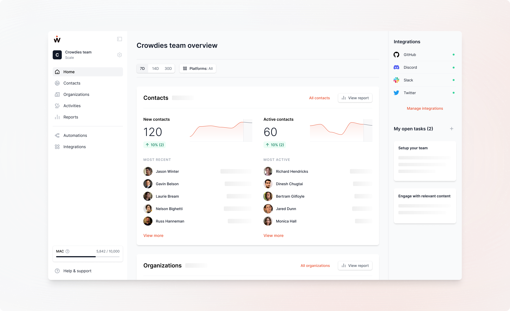

🏚 Home
Home gives you a quick snapshot of key things that are happening in your developer data. You can get an overview of the core elements of GitMesh CE:
- Contacts
- Organizations
- Activities
- Active Integrations
- Open tasks
By default, Home displays data for the last 7 days across all connected platforms. Above the contacts element at the top, you can change the time period of displayed data (7, 14, or 30 days) and filter by connected platforms. This will affect all modules on Home except your active integrations and open tasks.

Filters
filters allow you to filter contacts, organizations, and activities by platform or period.
- Period: You can display data in the last 7, 14, or 30 days
- Platform: You can filter data by a specific platform that you have connected.
Contacts
- Total contacts: How many contacts were identified through your connected data sources, this could be developers interacting with you in community channels, using your product, or synced from your CRM in a given period (7, 14, 30 days)
- New contacts: How many new contacts joined and did their first activity in the selected time period. The result is displayed as a number (total new contacts in a given time period) with a relative change (to the previous time period) and as a graph (new contacts over a given time period). Below is a feed of the newest contacts, from which you can jump directly to each contact's profile.
- Active contacts: How many contacts did at least one activity in the given time period. The result is displayed as a number (total active contacts in a given time period) with a relative change (to the previous time period) and as a graph (active contacts over a given time period). Below is a feed of recent active contacts, from which you can jump directly to each contact's profile.
Organizations
- Total organizations: How many organizations were identified in your contacts (all-time)
- New organizations: How many previously unknown organizations were linked to at least one new contact in the given time period. The result is displayed as a number (total new organizations in a given time period) with a relative change (to the previous time period) and as a graph (new organizations over a given time period). Below is a feed of the newest organizations, including the logo, number of associated contacts, and number of employees (if available).
- Active organizations: How many organizations were linked to at least one activity of an associated contact in the given time period. The result is displayed as a number (total active organizations in a given time period) with a relative change (to the previous time period) and as a graph (active organizations over a given time period). Below is a feed of recent active organizations, including the logo, number of associated contacts, and number of employees (if available).
Activities
- Total activities: How many activities happened (all-time)
- Activity graph: How many activities happened per day, displayed as a line chart
- Overall sentiment: We analyze the sentiment of all text-based activities - think about pull requests, Discord messages, tweets, etc. This module displays how many positive, neutral, and negative activities we identified (in total & in %).
- Top activities by type: It shows which type of activities are most performed by your community
- Trending conversations: The most relevant conversations across all platforms. Trending is defined by the number of replies a conversation received in the selected time period. For every conversation, you get insights into the number of participants, replies, and sentiment on each topic.
- Recent activities: A feed of recent activities, sorted by time and date.
Integrations
- Active integrations: This widget displays all your connected integrations. If there is a green dot next to your integration, it means that your integration is connected. If you notice any other than a green dot next to it means that your integration failed to connect or needs additional action.
Open tasks
- My open tasks: Any open tasks assigned to you that are yet to be completed, displaying the task title, description, related contact (s), assignee(s), and its due date. You can mark a task as completed by checking the circle next to the task name or edit the task by clicking the three dots on the right. You can add new tasks by clicking "Add task" at the top right corner or navigate to your Tasks page by clicking "All tasks".
- Task suggestions: When you first set up GitMesh CE or have no open tasks, you may see suggestions of tasks.